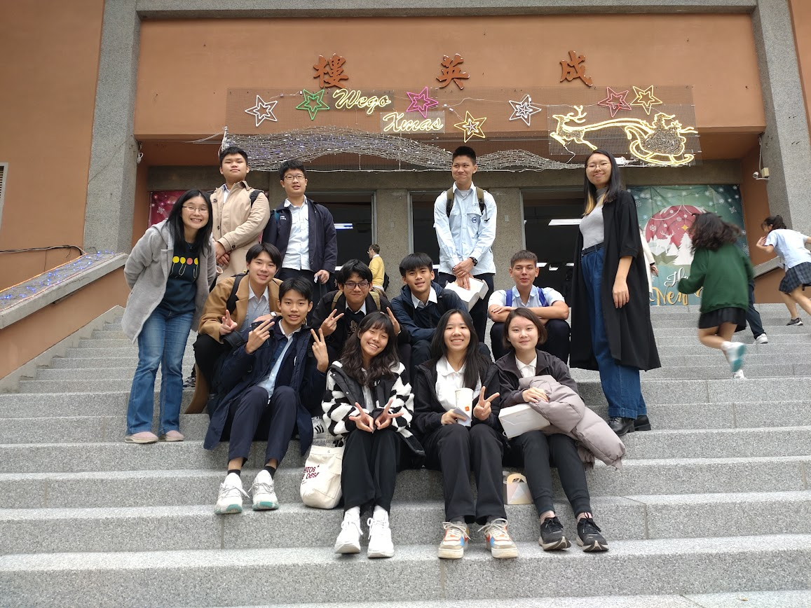

- Captain of the HSNU English debate team, led team to participate in events such as Taipei Cicero English Debate Tournament and National High School English Debate Competition Regional Competition

- Participated in global exchange student program with French school Le Gymnase Site De Jean Sturm

- Participated in global exchange student program with Waseda Junior High School and The University of Tokyo
- English speech contest First Place with Distinction
- Hobbies apart from STEM include long distance swimming, clarinet & chess